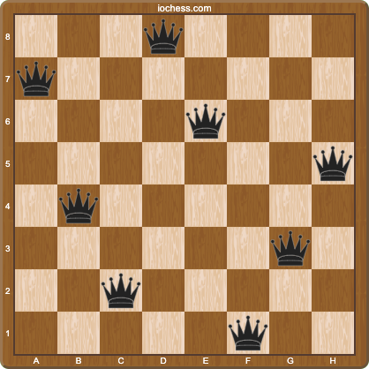

Depth-first search in Clojure (tree-seq)
tree-seq, to solve a classic puzzle.
tree-seq, puzzle

A classic puzzle involves placing eight queens on a chessboard so that no two are attacking each other.
Today, we search out such arrangements, in Clojure.
Since no solution has two queens on the same rank, a nice way to represent the board with data is as a vector of numbers, each element of the vector a column index for the queen on that rank.
For example, the vector [0 2] would be a board with two queens, one in the corner and another a knight’s move away.
(def board [0 2])We can visualize boards by converting these vectors into so-called FEN strings, which can be converted into images by a web service provided by the caring strangers at chessboardimage.com.
First, we obtain the elements of the FEN string as a sequence.
(for [i board] (str i "q" (- 7 i)))("0q7" "2q5")FEN strings do not allow zeros (I do not make the rules).
(for [i board] (.replace (str i "q" (- 7 i)) "0" ""))("q7" "2q5")Each rank is delimited with a slash.
(->> (for [i board] (.replace (str i "q" (- 7 i)) "0" ""))
(clojure.string/join "/"))"q7/2q5"That goes straight into the chessboardimage.com URL
(->> (for [i board] (.replace (str i "q" (- 7 i)) "0" ""))
(clojure.string/join "/")
(format "https://chessboardimage.com/%s.png"))"https://chessboardimage.com/q7/2q5.png"
That is the body of a function that converts a board into an image
(defn board->image
[board]
(->> (for [i board] (.replace (str i "q" (- 7 i)) "0" ""))
(clojure.string/join "/")
(format "https://chessboardimage.com/%s.png")))To solve the puzzle, we build a tree of candidate solution boards, the children of each node being boards with a new queen added on the next rank to each square not under attack.
To find the squares under attack, we begin by computing the board’s ranks.
(map-indexed vector board)([0 0] [1 2])Each queen attacks up to three squares on the next rank, so for each slope m in -1, 0, 1 and each queen’s rank and index, we produce three indexes under attack (y=mx+b).
(for [m [-1 0 1]
[rank i] (map-indexed vector board)]
(+ i (* m (- (count board) rank))))(-2 1 0 2 2 3)To compute the candidate squares, we take the set of valid indexes and remove those under attack.
(->> (for [m [-1 0 1]
[rank i] (map-indexed vector board)]
(+ i (* m (- (count board) rank))))
(apply disj (set (range 8))))#{7 4 6 5}From those we produce a sequence of child boards.
(->> (for [m [-1 0 1]
[rank i] (map-indexed vector board)]
(+ i (* m (- (count board) rank))))
(apply disj (set (range 8)))
(map #(conj board %)))([0 2 7] [0 2 4] [0 2 6] [0 2 5])That is the body of a function that takes a board, and produces child boards in the tree of candidate solutions.
(defn board->children
[board]
(->> (for [m [-1 0 1]
[rank i] (map-indexed vector board)]
(+ i (* m (- (count board) rank))))
(apply disj (set (range 8)))
(map #(conj board %))))We can enumerate all candidate boards with Clojure’s tree-seq; a function of three arguments, the first is a predicate that is true for nodes with children.
In our case, we keep adding queens as long as a board has fewer than eight queens.
(def boards (tree-seq #(< (count %) 8) ... ...))The second argument to tree-seq is a function that given a node, produces a sequence of children.
We just wrote that function (board->children).
(def boards (tree-seq #(< (count %) 8) board->children ...))The third argument to tree-seq is the root of the tree, an empty board [] will do.
(def boards (tree-seq #(< (count %) 8) board->children []))The solutions to the puzzle are those boards with 8 queens on them.
(def solutions (filter #(= (count %) 8) boards))Of which, there are this many…
(count solutions)92The forty-second such solution
(nth solutions 42)[3 0 4 7 1 6 2 5]As an image
(board->image (nth solutions 42))"https://chessboardimage.com/3q4/q7/4q3/7q/1q6/6q1/2q5/5q2.png"🙇